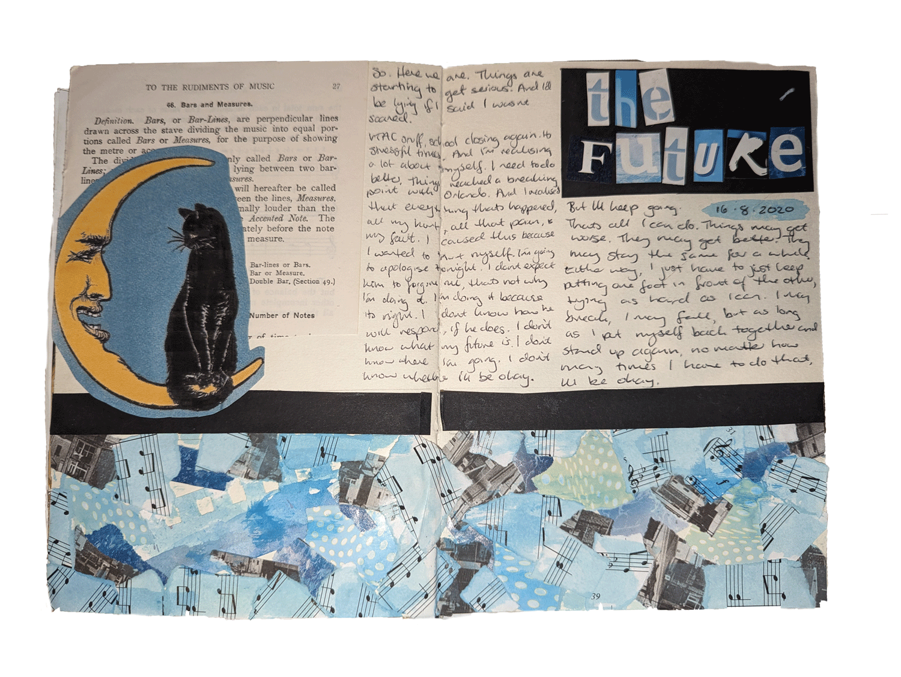
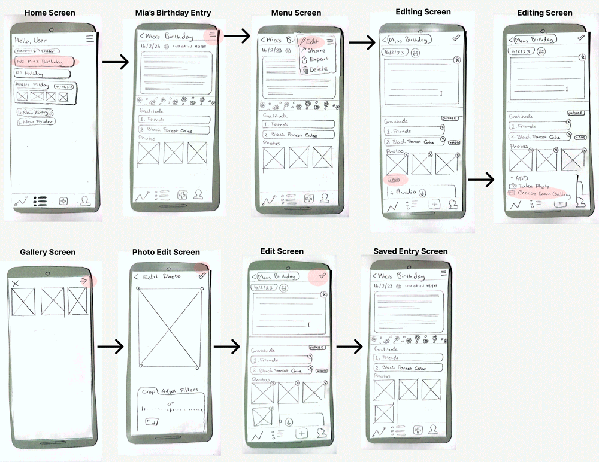
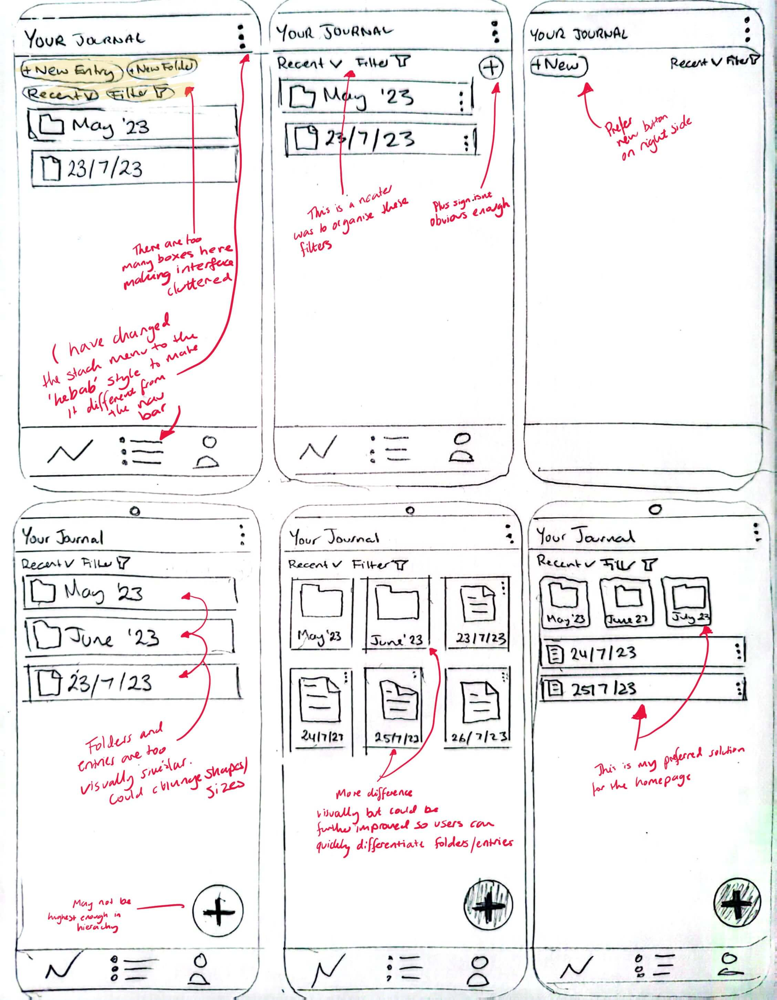
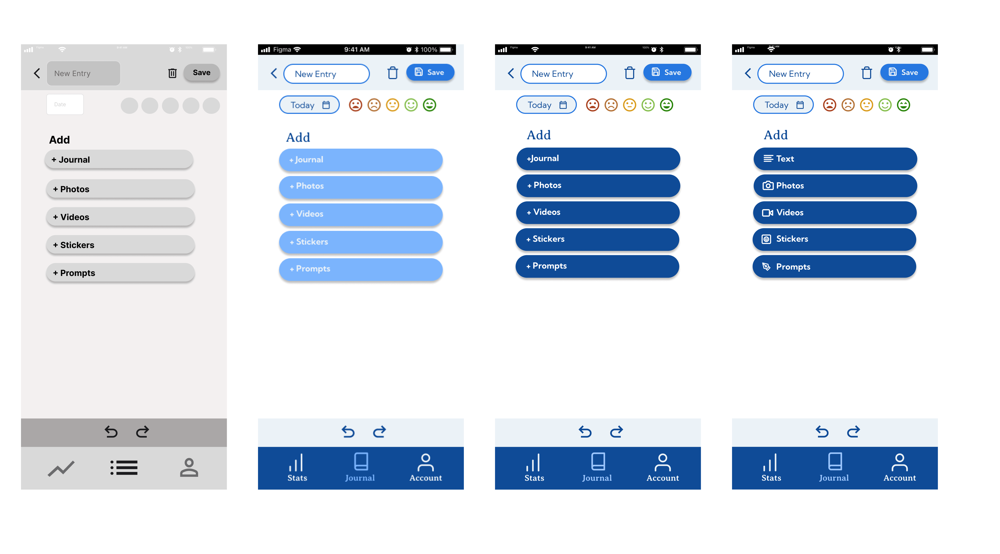

Overview
Jots is a digital journaling app that aims to improve how people capture their daily experiences through journaling. It was created in response to the problem that existing tools didn’t support a seamless integration of text, photos, and videos. This led to a disjointed journaling experience that detracts from being able to reflect on events and emotions. This case study details Jots’ app creation from initial concepts to rounds of user testing and final iterations, with a focus on iterating based on user feedback.

Background
I started this project by reflecting on my personal struggles with traditional journaling, being asked to find a task that could be improved through an online application.
Challenges Identified
- Consistency: I’d lose motivation to journal often, and the more days I missed, the more difficult it felt to start again.
- Media Integration: I wanted to be able to integrate multiple media types to create visually interesting journalling spreads, however, switching between different apps for photos, videos, and audio was tiring.
- Emotional Barriers: Occasionally, the journalling process felt difficult to start due to self-criticism.
To further understand these issues, I interviewed two people who also journal regularly to uncover the struggles they face with the hobby, and features that they would find helpful in a journalling app.
Key Insights
- Tools and Mediums: Both interviewees used a combination of physical and digital tools (sketchbooks, notes apps) for journaling, showing a need for flexibility in journaling apps to accommodate different media types.
- Motivation and Struggles: A common challenge for both participants was consistency and motivation. They both found journaling beneficial but found it required a mental effort to start.
- Emotional Impact: Both interviewees stated that journaling helps them process emotions, making them feel accomplished or lighter afterwards. One found that sharing their journals with loved ones helped them communicate their feelings.
- Time and Place: Journaling was often completed in the evening, in bed or at home, taking anywhere from 10 to 30 minutes, and done inconsistently.

Initial Goals
The goal of Jots was to create an app that offers more flexibility than traditional journaling tools, with features that inspire users to journal more effectively and consistently.
Development
In line with my goals for the project, I created wireflows and UI screens for Jots. A paper prototype was developed from these screens to test usability with real users. The usability test scenario required users to add a new image to the entry titled “Mia’s Birthday.” These tests revealed the following feedback points:

Test Results
- Test 1: My participant did not complete the task successfully; however, they were able to make a new entry, adding the picture.
- Test 2: The participant first went to make a new entry as opposed to the “Mia’s Entry” option. They did complete the task successfully after a few tries.
These tests showed the confusion that occurred for users with the + button on the navigation bar, giving me an indication that this needed to be developed further.
In response to my first tests, I iterated the wireflow as seen below. These updated wireframes were then tested with different participants.

Test Results
- Navigation Confusion: The “New Entry” page was unclear. Users struggled to find basic actions, and the “Add Journal” button caused additional confusion.
- Terminology Issues: The term “Journal” meant different things to different people, leading to confusion over whether it referred to a new entry or the entire entry list.
Design Solutions
I took this feedback and made some necessary changes:

- Icon and Label Updates: Replaced ambiguous terms like “Add Journal” with clearer labels such as “Add Text.”
- Revised Visual Elements: Added colour and adjusted fonts to make the interface less sterile.
- Mood Tracking Clarification: Rearranged and rephrased the mood tracking feature to make it clear that it was about logging emotions, not rating the quality of an entry.
Design and Testing Process
1st Click Test
Objective: Check if users could easily find where to create a new journal entry.
Results: 9 out of 10 users got it right on the first try, indicating that the primary navigation was solid.
5-Second Test
Objective: Capture first impressions and see how quickly users understood the purpose of key pages.
Pages Tested:
- “Mia’s Birthday” Page: Evaluated how clearly it communicated that it was a past entry.
- New Entry Page: Checked if users understood the mood tracking feature.
Results: Users found the design functional but bland. There was confusion about mood tracking—many thought it was a rating system for the entry itself rather than a reflection on their emotions.

Final UI Screens
- Homepage: Kept the homepage layout relatively unchanged since it received positive feedback for its simplicity and ease of use.
- New Entry Page: Refined the layout and incorporated icons to improve usability. The goal was to make it immediately clear what options users had for creating new entries.
Impact on User Experience
- Reduced Cognitive Load: Clearer labels and icons helped users grasp functionalities faster, reducing confusion and frustration.
- Improved Visual Hierarchy: The updated typography and iconography made the app feel more welcoming and engaging, addressing the initial feedback of it being “soulless.”
- Increased User Trust: The refined design made Jots feel more credible and reliable, which is critical for an app that handles personal data.
Conclusion
Jots evolved significantly through iterative design and testing. Addressing confusing navigation, enhancing visual appeal, and refining terminology transformed the app into a more intuitive and engaging tool for journaling.